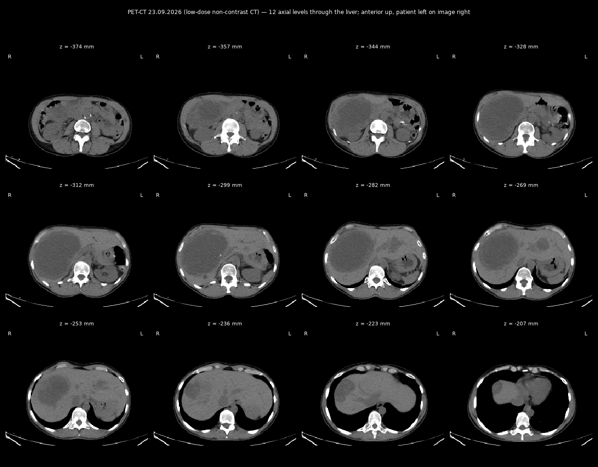
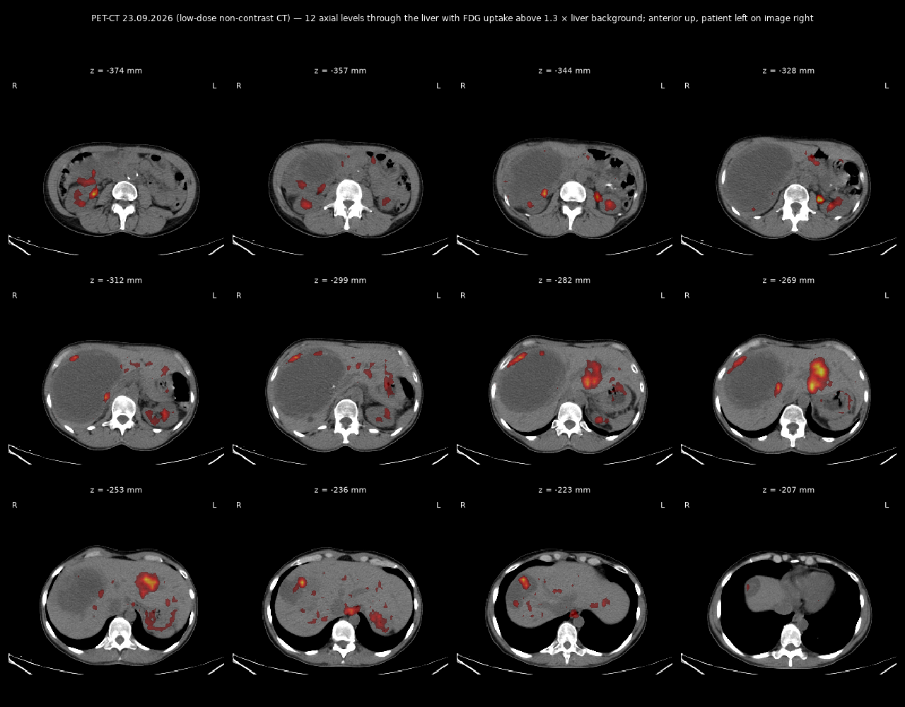

PET-CT whole body (low-dose CT, no contrast), KMKOC — English translation
PET-CT of 23 Sep 2026 — images from the study
CT sheet, 12 levels through the liver

CT + FDG uptake sheet

MUNICIPAL NON-PROFIT ENTERPRISE «KYIV CITY CLINICAL ONCOLOGY CENTRE» (KMKOC)
69 Verkhovynna St., Kyiv, 03115, Ukraine · tel. (044) 4239607 · E-mail: petctkyiv@gmail.com · EDRPOU code 13697965
Combined PET-CT examination protocol
Patient (full name): Zherlitsyna Anastasiia Stanislavivna
Date of birth: 25.04.1976
Medical record No.: 13189/26
Patient weight: 65 kg
Date of examination: 23.09.2026
Scanner: PET-CT GE Discovery STE16
Radiopharmaceutical (RP): 18F-FDG
RP activity: 260 MBq
Route of administration: intravenous
Effective dose, low-dose CT: 5.64 mSv
Effective dose, PET: 4.94 mSv
Total dose, PET/CT: 10.58 mSv
Preparation: fasting; oral water loading.
Imaging performed 80 min after RP injection.
Field of view: from the supraorbital ridges to the mid-third of the thighs
Blood glucose at time of scan: 5.9 mmol/L
Diagnosis:
Leiomyosarcoma of the uterine body, T2NxM1. Secondary involvement of the liver and peritoneum. Disease progression in the liver. Gastric GIST.
Anamnesis morbi:
Histopathology (liver) 2023 – metastasis of uterine leiomyosarcoma; histopathology (stomach) from 2023 – gastric GIST, GIST metastasis to the liver;
Surgical treatment – 01.2023 – repeat liver biopsy; 11.04.2023 – gastric biopsy, core biopsy of the liver;
Chemotherapy – 4 cycles in 2022 + targeted therapy with pazopanib, thereafter 3.5 years of imatinib.
Description of the PET-CT images (comparison with PET/CT of 19.06.2026):
Neck: symmetrical uptake of the tracer in the tonsils is seen, which is a physiological process. No other areas of tracer uptake in the neck organs were found. No cervical, supra-/infraclavicular or axillary lymph nodes with pathological RP accumulation are visualised.
Chest: the parenchyma of the right and left lungs and the mediastinal organs show no pathological hypermetabolism. In the middle–lower third of the oesophagus, increased RP uptake of moderate-to-high intensity is seen, SUVmax = 2.0–3.2, without additional mass lesions. Physiological tracer distribution is seen in the mammary glands. Physiological RP distribution is seen in the myocardium. Mediastinal blood-pool SUVmax = 1.6. No mediastinal or pulmonary-hilar lymph nodes with pathological RP accumulation were found.
Abdominal cavity: the gastric walls show a relatively uniform RP distribution, SUVmax up to 2.8, without suspicious foci of hypermetabolism. Along the lesser curvature an FDG-negative lesion persists, closely apposed to the tail of the pancreas, with signs of calcification, measuring 43×32 mm (previously 4.3×3.3 cm). In the liver, the previously known multiple ametabolic lesions persist (the largest 98×148 mm in the right lobe – previously 14.4×10.4 mm) with ingrowth of metabolic activity along the contour and within the structure of some of them, intensity SUVmax up to 4.9, with a metabolic size in the left lobe up to 35×54 mm (confluent) and up to 15×24 mm within the ametabolic area in segment S8. Physiological RP distribution is seen in the spleen, pancreas and both adrenal glands. The walls of the small and large intestine show no pathological hypermetabolism. RP uptake in both kidneys is physiological for this tracer. No abdominal or retroperitoneal lymph nodes with pathological RP accumulation were found.
Pelvis: status after chemotherapy for leiomyosarcoma of the uterine body. Along the anterior uterine wall a heterogeneous lesion persists, SUVmax up to 1.8, with calcifications in its structure, measuring 67×49 mm (previously 6.8×5.5 cm). A stable ametabolic nodular lesion persists along the upper margin, measuring 37×47 mm (4.6×3.7 cm). No other areas of pathological RP accumulation in the pelvic organs were found. Physiological tracer uptake is noted in the urinary bladder. No RP hypermetabolism in the lymph nodes of the true pelvis, iliac or inguinal groups was found.
Skeleton: no pathological tracer metabolism indicating osteolytic involvement was found in the bones.
Conclusion:
PET/CT signs of an increase in metabolic activity in multiple foci of liver-parenchyma involvement compared with the PET/CT of 19.06.2026, which is characteristic of progression of the underlying disease.
Stable low-intensity lesion of the uterine body and a stable ametabolic node of the uterine body, without marked change.
A stable FDG-negative lesion of the gastric body persists.
RP uptake in the oesophagus may correspond to an inflammatory origin; however, further evaluation – EGD (upper GI endoscopy) – is recommended.
No other data indicating an FDG-positive pathological process were found.
Recommended:
oncologist consultation; PET/CT treatment monitoring.
Nuclear-medicine physician: Kholodna A.V.
Note! 18F-FDG is not a tumour-specific radiopharmaceutical. The presence of an FDG-insensitive tumour type cannot be excluded. This report cannot serve as a definitive diagnosis. The PET/CT data should be considered valid for three weeks.
English translation of the original Ukrainian PET-CT report of 23.09.2026 (KMKOC, Kyiv). Faithful clinical translation; measurements and SUV values reproduced as in the original.
[Translation note: plain-language English translation of the Ukrainian original for reference; not a certified medical translation.]